건축기사 (2006-09-10 기출문제)
1과목: 건축계획
1. 공장건축계획의 기능식 레이아웃으로서, 기능이 동일하거나 유사한 공정 또는 기계를 집합하여 배치하는 방식으로 다품종 소량생산이나 주문생산의 경우와 표준화가 어려운 경우에 적합한 형식은?
- 제품중심의 레이아웃
- 공정중심의 레이아웃
- 고정식 레이아웃
- 혼성식 레이아웃
(정답률: 79%)

2. 학교 운영방식에 대한 설명 중 옳은 것은?
- 종합교실형(U형)은 중학교 저학년에 적합하다.
- 일반교실 ㆍ 특별교실형(U＋V형)은 교실의 수가 학급수와 일치한다.
- 교과교실형(V형)은 각 학급에 일반교실이 하나씩 주어지며 그 외에 특별교실을 갖는다.
- 플래툰형(P형)은 교사의 수가 부족하거나 적당한 시설이 없으면 실시가 곤란하다.
(정답률: 63%)
3. 아파트의 평면 형식 중 일반적으로 동서를 축으로 한쪽 복도를 통해 각 주호로 들어가는 형식은?
- 계단실형
- 편복도형
- 중복도형
- 집중형
(정답률: 74%)
4. 도서관 건축계획에 관한 기술 중 가장 부적당한 것은?
- 열람실의 바닥, 천장재는 흡음성이 높은 재료를 사용한다.
- 서고는 가급적 공기조화설비를 갖춤과 동시에 반드시 장래 증축을 고려한다.
- 폐가식인 일반 열람실의 서고는 전문 분야별로 나누어 열람실 주변에 분산 배치하는 것이 관리상 편리하다.
- 어린이용 열람실은 될 수 있는 대로 1층에 배치함과 동시에 출입구를 별도로 만든다.
(정답률: 59%)
5. 다음의 은행계획에 대한 설명 중 옳지 않은 것은?
- 고객이 지나는 동선은 되도록 짧게 한다.
- 업무 내부의 일의 흐름은 되도록 고객이 알기 어렵게 한다.
- 주출입구에 전실을 둘 경우에는 바깥문은 밖여닫이 또는 자재문으로 할 수 있다.
- 고객의 공간과 업무공간과의 사이에는 원칙적으로 구분이 있어야 한다.
(정답률: 36%)
6. 다음 중 주심포식 건물이 아닌 것은?
- 강릉 객사문
- 수덕사 대웅전
- 서울 남대문
- 무위사 극락전
(정답률: 61%)
7. 미술관 계획에 대한 설명으로 부적당한 것은?
- 연속 순회형식은 중심부에 하나의 큰 홀을 두고 그 주위에 각 전시실을 배치하여 자유로이 출입하는 형식으로 대규모의 전시실에 적합하다.
- 갤러리 형식은 복도에서 각 실에 직접 들어갈 수 있으며 독립적으로 폐쇄할 수 있다.
- 이용자의 출입구는 직원출입구와 구분한다.
- 동선에는 이용자, 직원 등의 사람동선과 전시자료 등의 물건동선이 있다.
(정답률: 80%)
8. 고대 그리스에서 사용되던 오더(Order)로 가장 단순하고 장중한 느낌을 주며, 다른 오더와 달리 주초가 없는 것은?
- 도릭 오더(Doric order)
- 이오닉 오더(Ionic order)
- 코린티안 오더(Corinthian order)
- 터스칸 오더(Tuscan order)
(정답률: 66%)
9. 애리나(Arena)형 극장에 대한 설명으로 옳지 않은 것은?
- 연기자가 일정한 방향으로만 관객을 대하므로 강연, 콘서트, 독주, 연극 공연에 가장 좋은 형식이다.
- 가까운 거리에서 관람하면서 많은 관객을 수용할 수 있다.
- 무대의 배경을 만들지 않으므로 경제성이 있다.
- 무대의 장치나 소품은 주로 낮은 기구들로 구성한다.
(정답률: 84%)
10. 다음 중 학교의 계획에 관한 설명으로 옳지 않은 것은?
- 실내체육관의 배치는 학생이 이용하기 쉬운 곳에 배치하며 지역주민들의 이용도 고려한다.
- 초등학교 고학년의 경우 일반교실, 특별교실형(U＋V형)의 운영방식이 일반적이다.
- 동 학년의 학급은 될 수 있으면 균일한 조건으로 하여야 하기 때문에 동일한 층에 모으는 고려가 필요하다.
- 초등학교 저학년의 경우 될 수 있으면 2층 이상에 있게 하며 교문과 근접되지 않게 하여야 한다.
(정답률: 70%)
11. 종합병원에서 클로즈드 시스템(Closed System)의 외래 진료부 계획에 대한 설명으로 부적당한 것은?
- 환자의 이용이 편리하도록 2층 이하에 두도록 한다.
- 내과 계통은 소진료실을 다수 설치한다.
- 중앙주사실, 약국은 정면 출입구에서 멀리 떨어진 곳에 둔다.
- 실내환경에 대한 배려로서 환자의 심리고통을 덜어줄 수 있는 환경심리적 요인을 반영시킨다.
(정답률: 78%)
12. 사무소 건축의 평면계획에서 개방식 배치에 관한 설명으로 옳지 않은 것은?
- 소음이 크고 독립성이 떨어진다.
- 개인적인 환경조절이 용이하다.
- 전면적을 유용하게 이용할 수 있어 공간 절약상 유리하다.
- 방의 길이나 깊이에 변화를 줄 수 있다.
(정답률: 67%)
13. 다음 중 소규모 주택에서 1실 겸용으로 사용하기에 가장 부적당한 조합은?
- 침실과 식당
- 거실과 식당
- 침실과 서재
- 거실과 응접실
(정답률: 77%)
14. 다음 중 도서관에서 장서가 50만권일 경우 가장 적정한 서고의 면적은?
- 1,000~1,500m2
- 2,000~2,500m2
- 3,500~4,000m2
- 4,500~5,000m2
(정답률: 75%)
15. 극장의 음향계획에 대한 설명 중 옳지 않은 것은?
- 무대 근처에는 음의 반사재를 취한다.
- 불필요한 음은 적당히 감쇠시키고 필요한 음의 청취에 방해가 되지 않게 한다.
- 반사음의 집중이 없도록 한다.
- 천장계획에 있어서 돔(Dome)형은 음원의 위치여하를 막론하고 음을 확산시키므로 바람직하다.
(정답률: 84%)
16. 부엌공간에서 배선실은 어떤 용도로 쓰이는가?
- 세탁, 걸레빨기 및 잡품 창고를 위한 공간
- 세탁, 다림질 및 재봉 등의 작업을 하는 공간
- 연료 저장창고, 오물 처리시설 및 건조장 등의 옥외 작업공간
- 식품, 식기 등을 저장하는 공간
(정답률: 46%)
17. 사무소 건축의 코어(Core)부분에 대한 설명으로 옳지 않은 것은?
- 주내력벽 구조체로 외곽이 내진벽 역할을 한다.
- 중심 코어형은 구조상 좋지 않으며, 기준층 바닥면적이 적은 경우에 주로 사용한다.
- 공용 부분을 한 곳에 집약시킴으로써 사무소의 유효면적이 증대된다.
- 교통부분, 설비관련부분, 유틸리티부분 등으로 구분된다.
(정답률: 78%)
18. 다음의 종합병원계획에 관한 설명 중 가장 부적당한것은?
- 간호사 대기소는 간호사가 환자를 돌보기 쉽도록 병실군의 한쪽 끝에 위치시킨다.
- 병실의 천장은 반사율이 큰 마감재료는 피한다.
- I.C.U에는 집중적인 간호력과 고도의 의료설비를 갖추도록 한다.
- 결핵병동은 원칙적으로 종합병원에 포함시키지 않는다.
(정답률: 74%)
19. 다음 중 건축가와 작품이 잘못 연결된 것은?
- 르 꼬르뷔지에 － 사보이 주택
- 오스카 니마이머 － 브라질 국회의사당
- 프랭크 로이드 라이트 － 뉴욕 구겐하임 미술관
- 미스 반 데어 로에 － 레버하우스
(정답률: 50%)
20. 공동주택의 단위주거 단면구성 형태에 대한 설명 중 틀린 것은?
- 복층형(메조네트형)은 엘리베이터의 정지 층수를 적게 할 수 있다.
- 스킵 플로어형은 주거단위의 단면을 단층형과 복층 형에서 동일층으로 하지 않고 반층씩 엇나게 하는 형식을 말한다.
- 트리플렉스형은 듀플렉스형보다 프라이버시의 확보율은 낮고, 통로면적도 불리하다.
- 플랫형은 주거단위가 동일층에 한하여 구성되는 형식이다.
(정답률: 76%)
2과목: 건축시공
21. 다음 중 창호의 기능검사와 가장 관계가 먼 것은?
- 내열성
- 내풍압성
- 기밀성
- 수밀성
(정답률: 42%)
22. 다음은 콘크리트의 균열의 원인을 기록한 것이다. 이중에서 균열의 시기에 따라 구분할 때 콘크리트의 경화전 균열의 원인이 아닌 것은?
- 거푸집 변형
- 진동 또는 충격
- 소성수축, 침하
- 건조수축, 수화열
(정답률: 58%)
23. 콘크리트의 이어붓기에 관한 기술 중 부적당한 것은?
- 보는 단부에서 이어치기 한다.
- 보와 상판(바닥슬래브)은 이어치기를 하지 않고 동시에 칠 필요가 있다.
- 상판은 될 수 있는 한 중앙부근에서 수직으로 이어친다.
- 기둥의 이어치기는 하단에서 한다.
(정답률: 30%)
24. MCX(Minimum Cost Expending)기법에 의한 공사기간 단축 방법에서 아무리 비용을 투자해도 그 이상 공기를 단축할 수 없는 한계점은?
- 특급점(Crash Point)
- 표준점(Normal Point)
- 포화점
- 경제 속도점
(정답률: 74%)
25. 조적벽에 발생하는 백화(Efflorescence)를 방지하기 위한 방법으로 효과가 없는 것은?
- 줄눈 모르타르에 방수제를 넣는다.
- 줄눈 모르타르에 석회를 사용한다.
- 처마를 충분히 내고 벽에 직접 비가 맞지 않도록 한다.
- 벽면에 실리콘방수를 한다.
(정답률: 72%)
26. 건축공사의 원가계산상 현장의 공사용수비는 어느 항목에 포함되는가?
- 재료비
- 외주비
- 공통가설비
- 콘크리트 공사비
(정답률: 73%)
27. 콘크리트의 중성화와 가장 관계가 깊은 것은?
- 산소
- 이산화탄소
- 염분
- 질소
(정답률: 43%)
28. 연한 점토질 지반의 전단강도 측정에 가장 적합한 토질시험은?
- 표준관입시험
- 베인 테스트(Vane Test)
- 전기적 탐사
- 3축 압축 시험
(정답률: 68%)
29. 칠공사에 사용되는 칠의 종류와 희석제의 관계가 잘못 연결된 것은?
- 송진건류품－테레빈유
- 석유건류품－휘발유, 석유
- 콜타르 증류품－미네랄스피리트
- 송근건류품－송근유
(정답률: 66%)
30. 유리섬유, 합성섬유 등의 망상포를 적층하여 도포하는 도막방수 공법은?
- 코팅공법
- 라이니공법
- 멤브레인공법
- 루핑공법
(정답률: 65%)
31. 다음 중 수량 산출시 할증률이 가장 큰 것은?
- 원형철근
- 대형형강
- 고장력볼트
- 이형철근
(정답률: 44%)
32. 도장공사에 관한 주의사항으로 옳지 않은 것은?
- 바탕의 건조가 불충분하거나 공기의 습도가 높을 때는 시공하지 않는다.
- 초벌부터 정벌까지 같은 색으로 시공해야 한다.
- 야간은 색을 잘못 칠할 염려가 있으므로 시공하지 않는다.
- 직사광선은 가급적 피하고 도막이 손상될 우려가 있을 때에는 칠하지 않는다.
(정답률: 84%)
33. 철근 콘크리트 라멘조 건축물의 슬래브를 시공하고, 양생이 완료되기 전에 보의 단부와 슬래브가 연결되는 위치의 상부면에서 일직선으로 보를 따라 한바퀴 균열이 발생하였다. 이 때 균열의 가장 큰 원인은?
- 보양 잘못에 의한 건조 수축 균열
- 온도 급변에 의한 선팽창 균열
- 긴결철선 풀림에 의한 균열
- 상부 철근 내려 앉기에 의한 균열
(정답률: 31%)
34. 흙막이 공사시 지표재하 하중의 중량에 못견디어 흙막이 저면 흙이 붕괴되어 바깥에는 흙이 안으로 밀려 볼록하게 되어 파괴되는 현상을 무엇이라 하는가? (단, 점성토 지반일 경우)
- 히이빙(Heaving)파괴
- 보일링(Boiling)파괴
- 수동토압(Passive Earth Pressure)파괴
- 전단(Shearing)파괴
(정답률: 57%)
35. 건축공사에서 언더피닝(Under Pinning) 공법의 설명으로 옳은 것은?
- 용수량이 많은 깊은 기초 구축에 쓰이는 공법이다.
- 기존 건물의 기초 혹은 지정을 보강하는 공법이다.
- 터파기 공법의 일종이다.
- 일명 역 구축 공법이라고도 한다.
(정답률: 64%)
36. 건축마감공사로서 단열공사와 관련된 다음 내용 중 옳지 않은 것은?
- 단열시공바탕은 단열재 또는 방습재 설치에 지장이 없도록 못, 철선, 모르타르 등의 돌출물을 제거하여 평탄하게 청소한다.
- 설치위치에 따른 단열공법 중 단열성능이 적고 내부 결로가 발생할 우려가 있는 것은 외단열공법이다.
- 단열재를 접착제로 바탕에 붙이고자 할 때에는 바탕면을 평탄하게 한 후 밀착하여 시공하되 초기박리를 방지하기 위해 압착상태를 유지시킨다.
- 단열재료에 따른 공법으로 성형판단열재 공법, 현장발포재 공법, 뿜칠단열재 공법으로 분류되고 시공부위별 단열공법으로는 벽단열, 바닥단열, 지붕단열 공법 등이 있다.
(정답률: 67%)
37. 일반적으로 가장 많이 사용되는 벽돌 중 조적조 벽체의 줄눈 모양은?
- 평줄눈
- 민줄눈
- 오목줄눈
- 내민줄눈
(정답률: 62%)
38. 다음 중 공사비의 구성요소의 하나인 재료비의 내용이 아닌 것은?
- 직접재료비
- 간접재료비
- 운임, 보관비 등의 부대비용
- 일반관리비
(정답률: 48%)
39. 다음 중 QC(Quality Control) 활동의 도구가 아닌 것은?
- 기능계통도(Fast Diagram)
- 산점도
- 히스토그램
- 특성요인도
(정답률: 81%)
40. 길이 4.6m, 높이 3.4m의 벽을 두께 1.0B와 0.5B로 각각 쌓을 때의 벽돌(시멘트벽돌, 표준형) 구입량의 조합으로 알맞은 수량은?
- 1.0B－2,447매, 0.5B－1,232매
- 1.0B－2,331매, 0.5B－1,173매
- 1.0B－2,401매, 0.5B－1,208매
- 1.0B－2,464매, 0.5B－1,207매
(정답률: 30%)
3과목: 건축구조
41. 독립기초에 가 작용할 때 접지압이 압축력만 생기게 하기 위한 기초저면의 소길이는?
- 2m
- 3m
- 4m
- 5m
(정답률: 39%)
42. 다음 그림과 같은 단면을 가지는 보의 내진설계 수행 시 부재단부에서 부재중앙으로 부재 높이의 2배에 해당되는 구간에 필요한 스터럽의 최대간격은? (단, 주근 : 4-D16, 스터럽 : 10, d=400mm, fck=24MPa, fy=400MPa)
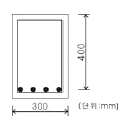
- 100mm
- 150mm
- 200mm
- 250mm
(정답률: 11%)
43. 다음과 같은 단순보에서 C점의 휨모멘트 값은?
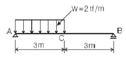
- 5.0 tfㆍm
- 4.5 tfㆍm
- 4.0 tfㆍm
- 3.5 tfㆍm
(정답률: 50%)
44. 철골 플레이트 보에서 중간 스티프너(Stiffner)를 사용하는 주된 목적은?
- 웨브 플레이트(Web Plate)에 생기는 휨모멘트에 저항하기 위해
- 플랜지 앵글(Flange Angle)의 단면을 작게 하기 위해
- 플랜지 앵글의 리벳간격을 넓게 하기 위해
- 웨브 플레이트의 좌굴을 방지하기 위해
(정답률: 53%)
45. 모래지반에서 N치가 20일 때 해당되는 지반의 상대밀도는?
- 아주 느슨하다.
- 느슨하다.
- 보통이다.
- 아주 조밀하다.
(정답률: 40%)
46. 철골조의 가새에 관한 기술 중 옳지 않은 것은?
- 트러스의 절점 또는 기둥의 절점을 각각 대각선 방향으로 연결하여 구조체의 변형을 방지하는 부재이다.
- 풍하중, 지진력 등의 수평하중에 저항하는 것으로 부재에는 인장응력만 발생한다.
- 보통 단일형강재 또는 조립재를 쓰지만 응력이 작은 지붕가새에는 봉강을 사용한다.
- 수평가새는 지붕트러스의 하현재면(평보면) 및 지붕면(경사면)에 설치한다.
(정답률: 66%)
47. 다음 구조물의 부정정차수는?
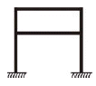
- 3차 부정정
- 4차 부정정
- 5차 부정정
- 6차 부정정
(정답률: 60%)
48. 지름 32cm의 원형 단면에서 도심축에 대한 단면계수는?
- 50cm3
- 804cm3
- 1,608cm3
- 3,217cm3
(정답률: 25%)
49. 합성보 설계시 시어커넥터의 구조제한에 대한 설명으로 옳지 않은 것은?
- 강재보의 웨브 선상에 설치되는 시어커넥터를 제외하고 스터드커넥터의 지름은 플랜지 두께의 3배 이하로 한다.
- 스터드커넥터의 종방향 피치는 스터드커넥터 지름의 6배 이상으로 휨방향 게이지는 스터드커넥터 지름의 4배 이상으로 한다.
- 스터드커넥터의 피치는 슬래브 전체 두께의 8배 이하로 한다.
- 시어커넥터는 용접 후의 높이가 단면 지름의 4배 이상이며, 머리가 스터드나 압연 ㄷ형강으로 하여야 한다.
(정답률: 20%)
50. 보의 파괴형상을 설명하는 것으로 인장철근이 상대적으로 작을 경우와 관계가 있는 파괴 현상은?
- 전단파괴
- 휨 파괴
- 연성파괴
- 취성파괴
(정답률: 21%)
51. 건물의 하부 전체 또는 지하실 전체를 하나의 기초판으로 구성한 기초로서 매트기초라고도 불리우는 것은?
- 독립기초
- 줄기초
- 온통기초
- 복합기초
(정답률: 64%)
52. 그림과 같은 단면을 가지는 직사각형보의 최소 철근량은? (단, fck=24MPa, fy=400MPa)
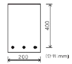
- 275mm2
- 280mm2
- 288mm2
- 292mm2
(정답률: 37%)
53. 강구조 고력볼트 접합에 대한 설명 중 옳지 않은 것은?
- 접합판재 유효단면에서 하중이 적게 전달된다.
- 볼트에는 마찰접합의 경우 전단 또는 지압응력이 발생한다.
- 피로강도가 높다.
- 접합부의 강성이 높다.
(정답률: 30%)
54. 판보(Plate Girder)에서 리벳, 볼트로 접합된 플랜지의 커버플레이트의 수는 최대 몇 장 이하로 하는가?
- 2장
- 3장
- 4장
- 5장
(정답률: 29%)
55. 다음 중 연약지반에서 부동침하를 방지하는 대책과 가장 관계가 먼 것은?
- 구조강성을 높일 것
- 건물 중량을 평균화할 것
- 건물을 길게 할 것
- 지하실을 강성제로 설치할 것
(정답률: 63%)
56. 다음 그림과 같은 띠철근 기둥의 ∅Pn 설계 축하중( )값으로 알맞은 것은? (단, fck=24MPa, fy=400MPa, 강도감소계수 ∅=0.7, 주근 단면적(Ag) : 3,000mm2, 띠철근 : D10@300임0
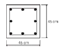
- 2,951,088 N
- 3,135,531 N
- 3,359,497 N
- 3,161,880 N
(정답률: 36%)
57. 다음 중 콘크리트의 설계기준강도(Specified Compres-sive Strength of Concrete)에 대한 설명으로 가장 적합한 것은?
- 콘크리트 부재를 설계할 때 기준이 되는 콘크리트의 압축강도
- 콘크리트의 배합 설계시에 목표로 하는 강도
- 구조체 또는 부재의 공칭강도에 강도감소계수 를 곱한 강도
- 철근콘크리트 부재가 사용성과 안전성을 만족할 수 있도록 요구되는 단면의 단면력
(정답률: 35%)
58. 그림과 같은 부정정보의 중앙부와 단부의 휨모멘트 비율 MC : MA는?
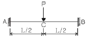
- 1 : 1
- 1 : 2
- 1 : 3
- 1 : 4
(정답률: 16%)
59. 그림에서 A점의 반력은?
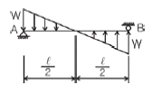
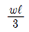
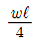
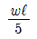
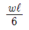
(정답률: 22%)
60. 강도설계법에서 처짐을 계산하지 않는 경우 철근콘크리트보의 최소 두께 규정으로 잘못된 것은? (단, 보통콘크리트와 설계기준항복강도 400MPa 철근을 사용한 부재임)
- 단순지지 :
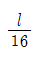
- 1단 연속 :
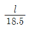
- 양단 연속 :
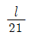
- 캔틸레버 :
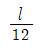
(정답률: 49%)
4과목: 건축설비
61. 단위세대 전용면적이 80[m2]인 공동주택(APT)의 추정부하용량(kVA/세대)으로 적정한 최소의 법적 부하용량은 얼마인가?
- 3[kVA]
- 3.5[kVA]
- 4[kVA]
- 4.5[kVA]
(정답률: 27%)
62. 다음 그림과 같이 관경이 각각 일 때 유량이 3.0m3/min 이라면 A, B 지점에서 유속(m/s)은 각각 얼마인가?
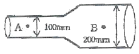
- A : 0.5m/s, B : 0.25m/s
- A : 0.75m/s, B : 0.375m/s
- A : 3.57m/s, B : 1.38m/s
- A : 6.37m/s, B : 1.59m/s
(정답률: 46%)
63. 저압 옥내배선 공사방법 중 사용전압이 400V가 넘고 전개된 장소인 경우 사용할 수 없는 공사방법은?
- 애자 사용 공사
- 합성 수지관 공사
- 케이블 공사
- 금속 몰드 공사
(정답률: 30%)
64. 조명기구 중 천장과 윗벽 부분이 광원의 역할을 하며 조도가 균일하고 음영이 유연하나 조면율이 낮은 특성을 갖는 것은?
- 직접조명기구
- 반직접조명기구
- 간접조명기구
- 전확산조명기구
(정답률: 64%)
65. 노통연관식 보일러에 대한 설명으로 옳지 않은 것은?
- 부하변동에 대한 안전성이 없다.
- 예열시간이 길다.
- 분할 반입이 어렵다.
- 보유수면이 넓어서 급수용량제어다 쉽다.
(정답률: 25%)
66. 수도직결방식의 급수에서 수압이 2.4 kg/cm2 일 때 급수압에 의한 물의 상승 높이는? (단, 마찰저항은 무시한다.)
- 2.4m
- 4.8m
- 12m
- 24m
(정답률: 34%)
67. 위생설비 유니트화에 대한 설명으로 옳지 않은 것은?
- 시공의 정밀도가 향상된다.
- 현장에서의 작업량이 감소하기 때문에 공기를 단축할 수 있다.
- 현장에서의 작업의 안전성을 향상시킬 수 있다.
- 개인의 기호에 따라 다양화가 가능하다.
(정답률: 62%)
68. 다음의 수송 설비에 대한 설명 중 옳지 않은 것은?
- 에스컬레이터 : 사람의 수직 수송을 목적으로 하며 수평이동을 수반함
- 이동보도 설비 : 사람의 수평 이동 보도 설비
- 컨베이어 : 각종 물건을 수평방향 등으로 수송하는 시스템
- 뎀웨이터 : 사람 및 물품의 수직 수송
(정답률: 61%)
69. 다음 중 덕트의 치수를 결정하는 방법이 아닌 것은?
- 등속법
- 등마찰법
- 정압재취득법
- 균등법
(정답률: 50%)
70. 인체가 주위 환경과 복사 열교환을 행하는 것과 똑같은 양의 복사 열교환을 행하는 균일한 주위 온도를 의미하며 인체가 실내의 어느 위치에 있느냐에 따라 달라지는 것은?
- 작용온도
- 유효온도
- 표준유효온도
- 평균복사온도
(정답률: 21%)
71. 다음 중 용어와 단위의 연결이 옳지 않은 것은?
- 상대습도 : %
- 엔탈피 : kcal/kg
- 열전도율 : kcal/m2h℃
- 수증기분압 : kPa
(정답률: 54%)
72. 전류가 흐르고 있는 도선에 대해 자기장이 미치는 힘의 작용방향을 정하는 법칙으로 전동기에 적용되는 법칙은?
- 암페어의 오른나사 법칙
- 렌쯔의 법칙
- 플레밍의 오른손 법칙
- 플레밍의 왼손 법칙
(정답률: 47%)
73. 최대 6개의 옥내소화전이 설치된 층이 있는 건물이 있다. 수원의 유효 저수량은 최소 얼마 이상이 되어야 하는가?
- 7.8m3
- 10.4m3
- 13.0m3
- 15.6m3
(정답률: 40%)
74. 전압이 1[V] 일 때 1[A]의 전류가 1[s] 동안 하는 일을 나타내는 것은?
- 1[Ω]
- 1[J]
- 1[Wh]
- 1[W]
(정답률: 53%)
75. 공설의 소방대가 사용하는 소방대 전용의 설비로서, 각 층에 설치하는 방수구와 지상 또는 1층 벽면에 설치하는 송수구 및 배관으로 구성되어 있는 소화활동설비는?
- 옥내소화전설비
- 옥외소화전설비
- 연결송수관설비
- 상수도소화용설비
(정답률: 36%)
76. 다음의 에스컬레이터에 대한 설명 중 옳지 않은 것은?
- 기다리는 시간이 없고 연속적으로 승객을 수송할 수 있다.
- 수송능력이 엘리베이터의 약 10배 정도이다.
- 정격 속도는 하강방향을 고려하여 45m/min 정도가 좋다.
- 기계실이 필요치 않으며 피트가 간단하다.
(정답률: 70%)
77. 공기조화방식 중 전수방식으로 덕트 샤프트나 스페이스가 필요 없거나 작아도 되나 외기량이 부족하여 실내공기의 오염이 심할 수 있는 방식은?
- 단일덕트방식
- 각층유닛방식
- 멀티존유닛방식
- 팬코일유닛방식
(정답률: 58%)
78. 증기트랩 중 응축수의 부력을 이용하는 기계식 트랩에 속하는 것은?
- 바이메탈 트랩
- 벨로즈 트랩
- 버킷 트랩
- 열동식 트랩
(정답률: 24%)
79. 100℃의 물 1kg이 100℃의 증기로 변하려면 얼마의 열이 필요한가?
- 100kcal
- 359kcal
- 539kcal
- 650kcal
(정답률: 19%)
80. 건물 내의 배수 계통에 통기관을 설치하는 목적으로 옳지 않은 것은?
- 배수관 내의 환기를 위하여
- 배수관이 막혔을 때에 예비로 사용하기 위하여
- 트랩의 봉수를 보호하기 위하여
- 배수관 내의 물의 흐름을 원활하게 하기 위하여
(정답률: 60%)
5과목: 건축법규
81. 연면적이 5,000m2일 때 용적률의 최대 허용오차는?
- 20m2
- 30m2
- 40m2
- 50m2
(정답률: 35%)
82. 다음 중 열손실 방지 등의 에너지이용합리화를 위한 조치를 취하지 않을 수도 있는 건축물은?
- 공장
- 교회
- 초등학교
- 소매시장
(정답률: 25%)
83. 국토의 계획 및 이용에 관한 법률에 의한 지구의 내용으로 옳지 않은 것은?
- 주차장정비지구
- 취락지구
- 고도지구
- 특정용도제한지구
(정답률: 49%)
84. 도시계획시설 또는 도시계획시설예정지에 건축을 허가할 수 있는 가설건축물의 기준으로 옳은 것은?
- 2층 이하일 것
- 조적식구조 이외의 구조일 것
- 연면적이 1,000m2 이하일 것
- 존치기간은 원칙적으로 3년 이내일 것
(정답률: 33%)
85. 영화관의 관람석 1개층 바닥면적이 1,500제곱미터인 경우 출구의 너비를 2미터로 했을 때 출구는 최소한 몇 개를 확보해야 하는가?
- 6개소
- 5개소
- 4개소
- 3개소
(정답률: 38%)
86. 다음 용어의 정의로 옳지 않은 것은?
- "대지"라 함은 지적법에 의하여 각 필지로 구획된 토지를 말한다.
- "거실"이라 함은 건축물안에서 주거, 집무, 작업, 집회, 오락 기타 이와 유사한 목적을 위하여 사용되는 방을 말한다.
- "건축"이라 함은 건축물을 신축, 증축, 개축, 재축 또는 대수선하는 것을 말한다.
- "내화구조"라 함은 화재에 견딜 수 있는 성능을 가진 구조로서 건설교통부령이 정하는 기준에 적합한 구조를 말한다.
(정답률: 54%)
87. 지하층에 설치하는 비상탈출구에 대한 기술 중 틀린 것은?
- 비상탈출구에서 피난층 또는 지상으로 통하는 복도나 직통계단까지 이르는 피난통로의 유효너비는 0.75m 이상으로 할 것
- 비상탈출구는 출입구로부터 2m 이상 떨어진 곳에 설치할 것
- 비상탈출구의 유효너비는 0.75m 이상으로 하고, 유효높이는 1.5m 이상으로 할 것
- 지하층의 바닥으로부터 비상탈출구의 아랫부분까지의 높이가 1.2m 이상이 되는 경우에는 벽체에 발판의 너비가 20cm 이상인 사다리를 설치할 것
(정답률: 13%)
88. 다음 중 지방건축위원회의 심의사항이 아닌 것은?
- 종요시설로서 당해 용도에 쓰이는 바닥면적의 합계가 5천제곱미터 이상인 건축물의 건축
- 16층 이상인 건축물의 건축
- 건축선의 지정에 관한 사항
- 풍치지구안의 건축물 허가에 관한 사항
(정답률: 52%)
89. 국토의 계획 및 이용에 관한 법률상 도심 ‧ 부도심의 업무 및 상업기능의 확충을 위하여 필요한 지역은?
- 유통상업지역
- 근린상업지역
- 일반상업지역
- 중심상업지역
(정답률: 57%)
90. 다음 중 대지안에 조경 면적을 확보하지 않아도 되는 시설물은?
- 대지면적 400m2 이상 건축물
- 산업단지안의 공장
- 읍면의 생산녹지지역안의 건축물
- 연면적 합계가 1,000m2 인 상업지역내 물류시설
(정답률: 32%)
91. 환경보전을 위한 필요 조치사항으로 굴착부분의 비탈면 높이가 3m를 넘는 높이의 비탈면에는 높이 3m 이내 마다 단을 만들어 주어여 한다. 이 때 단의 면적 기준으로 옳은 것은?
- 비탈면적의 1/3 이상
- 비탈면적의 1/4 이상
- 비탈면적의 1/5 이상
- 비탈면적의 1/6 이상
(정답률: 20%)
92. 다음 중 건축법에서 정의된 건축설비의 내용에 포함되지 않는 것은?
- 건축물에 설치하는 국기게양대
- 건축물에 설치하는 유선방송수신시설
- 건축물에 설치하는 오물처리의 설비
- 건축물에 설치하는 전산정보처리 설비
(정답률: 12%)
93. 지구단위계획구역의 지정대상에 속하지 않는 것은?
- 대지조성사업지구
- 도시재건축사업구역
- 관광특구
- 택지개발예정지구
(정답률: 27%)
94. 2 도로의 너비가 각각 6미터이고, 그 교차각이 90도 이상 120도미만인 도로모퉁이 부분의 건축선은 대지에 접한 도로경계선의 교차점으로부터 도로경계선을 따라 각각 얼마를 후퇴한 점을 연결한 선으로 하는가?
- 후퇴하지 아니한다.
- 2미터
- 3미터
- 4미터
(정답률: 44%)
95. 부설주차장의 설치기준에서 설치대수의 산정기준을 수용인원기준으로 하는 시설물은?
- 종합병원
- 호텔
- 방송국
- 옥외수영장
(정답률: 55%)
96. 다음 중 준주거지역안에서 건축할 수 있는 건축물은? (단, 도시계획 조례가 정하는 건축물은 제외)
- 발전시설
- 안마시술소
- 장례식장
- 교육연구시설
(정답률: 61%)
97. 자동차용 승강기로 운반된 자동차가 주차구획까지 자주식으로 들어가는 노외주차장의 경우에 자동차용 승강기는 주차대수 몇 대당 1대를 설치하여야 하는가?
- 10대
- 15대
- 20대
- 30대
(정답률: 27%)
98. 다음 중 6층 이상인 건축물의 거실에 반드시 배연설비의 설치를 하여야 하는 건축물의 용도가 아닌 것은?
- 도서관
- 숙박시설
- 위락시설
- 노인복지시설
(정답률: 47%)
99. 다음 용도 분류에 따른 관계가 옳지 아니한 것은 어느 것인가?
- 관광휴게시설－어린이회관
- 교육연구시설－직업훈련소
- 묘지관련시설－장례식장
- 문화 및 집회시설－수족관
(정답률: 54%)
100. 특별시장 ‧ 광역시장, 시장 ‧ 군수 또는 구청장이 설치하는 노외주차장에는 주차대수 몇 대마다 1면의 장애인 전용주차구획을 설치하여야 하는가?
- 10대
- 20대
- 30대
- 50대
(정답률: 27%)